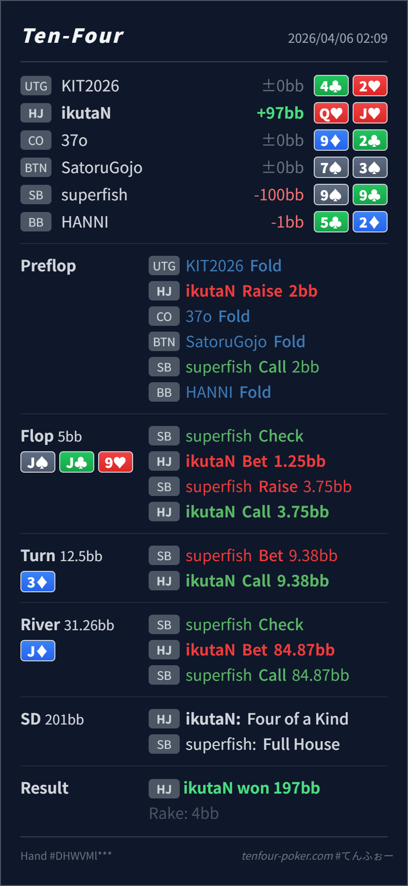

Preflop
良いQJs は HJ open として十分強く、IP もあるので素直に利益を取りやすい spot です。
主論点は、SB の flop x/r から turn barrel にかけて、Hero がどのレンジを想定すべきだったかです。当時の思考メモはないので、「trips だから守りたくなる」、あるいは「x/r -> barrel は強すぎてかなり絞られる」という仮定で見ます。結論は、GTO基準でも exploit 的にも flop / turn は call 寄りで、river J♦ は怖いカードというより SB の second best を厚くするカードでした。
Q♥J♥J♠ J♣ 9♥ / 3♦ / J♦x/r と turn barrel に対して raise で押し返さず call に留めたラインは、SB の worse value と bluff を残す意味で筋が通っています。x/r -> barrel range をどう置くかです。99 / J9 だけに縮めず、Jx + 99 + 強めの9x + 一部のやりすぎアグレ まで残して考えることです。Q♥J♥2BB, SB call, BB foldJ♠ J♣ 9♥ / 3♦ / J♦1.25BB, SB raise 3.75BB, HJ call9.38BB, HJ call84.87BB, SB call
良いQJs は HJ open として十分強く、IP もあるので素直に利益を取りやすい spot です。
J♠ J♣ 9♥かなり良い
Hero がここで見るべきなのは、QJ が何に勝っていて、3bet すると何を落とすかです。
3♦良い99/J9 だけに縮めてしまうと fold しすぎますし、raise すると worse を自分から消しやすいです。
J♦かなり良い
Hero は quads で最上位です。相手の second best が厚くなる runout なので、最大値寄りを狙えます。
| 論点 | その場で置きがちな見立て | どこがズレたか | 次回の基準 |
|---|---|---|---|
flop の x/r 対応 | QJ はかなり強いので、すぐ 3bet して守りたくなる。逆に x/r が強そうで怖くもなる。 | paired board の x/r は最上位だけではありません。Jx, 99, J9s, 一部 9x, QT/T8s 系や過剰アグレが残りえます。ここで 3bet すると worse を落として strong value に寄せやすいです。 | x/r を受けたら、まず raise したときに誰が残るかを確認する。worse と bluff を十分残せるなら call を優先する。 |
| turn barrel への対応 | flop x/r のあとさらに打たれると、99 や強い Jx にかなり寄っていそうに見える。 | それでも QJ が即苦しくなるわけではありません。KJ/TJ/JT系, 一部 9x, 過剰バリューも残りうるので、fold や raise は早すぎます。 | barrel に対しては、何に負けるかだけでなく、何にまだ勝っているかと、call で何を残せるかを数える。 |
river J♦ のサイズ | board がさらに paired すると、相手が怖がって降りそうで大きく打ちにくい。 | このカードは SB の 99 や多くの Jx を full house 化し、second best を厚くします。Hero が最上位に到達していて、相手側の強いコール候補も増えています。 | 自分が最上位で、相手の second best が増えるカードなら、受け身ではなく大きく取りにいく。 |
| ストリート | その時点の見え方 | 判断の焦点 | 評価 | 推奨 |
|---|---|---|---|---|
| Preflop | SB の flat range には pocket pair、suited broadway、suited connector、一部 suited Ax が入ります。 | QJs は HJ open として十分強く、IP もあるので素直に利益を取りやすい spot です。 | 良い | open で問題ありません。 |
Flop J♠ J♣ 9♥ | SB の x/r は GTOなら Jx, 99, 一部 9x, QT/T8s 系、backdoor bluff を含みます。実戦ではやや value-heavy でも、なお最上位だけには寄りません。 | Hero がここで見るべきなのは、QJ が何に勝っていて、3bet すると何を落とすかです。 | かなり良い | c-bet は自然です。x/r に対しては Jx + 99 + 一部9x + bluff を残して call するのが素直です。 |
Turn 3♦ | blank turn の barrel で、SB は 99, 多くの Jx, 一部 9x, semibluff の残りに寄ります。実戦では bluff 比率がやや下がっても、過剰バリューは十分ありえます。 | 99/J9 だけに縮めてしまうと fold しすぎますし、raise すると worse を自分から消しやすいです。 | 良い | ここも call が自然です。「強いけど raise しない」ではなく、「相手レンジを残すために call」と整理したいです。 |
River J♦ | SB の check range には 99 と多くの Jx 由来の full house、取りこぼし気味の強い value が残ります。 | Hero は quads で最上位です。相手の second best が厚くなる runout なので、最大値寄りを狙えます。 | かなり良い | jam はとても良いです。「相手が怖がるカード」ではなく「相手のコール候補が強くなるカード」と見るのが今回の整理です。 |
x/r -> barrel range をどこまで広く、正しく残せるかです。x/r -> turn barrel は GTO より value-heavy に寄る相手もいます。その意味では、「bluff を大量に期待して call」ではなく、Jx / 9x の過剰バリュー込みで continue と考える方が実戦向きです。